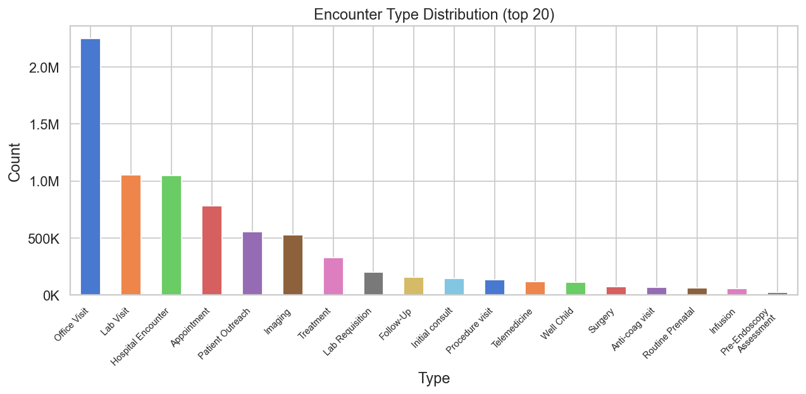
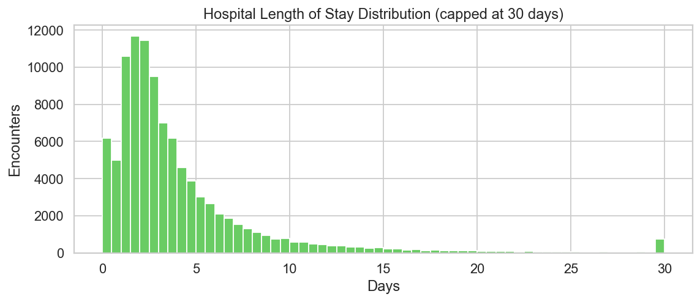
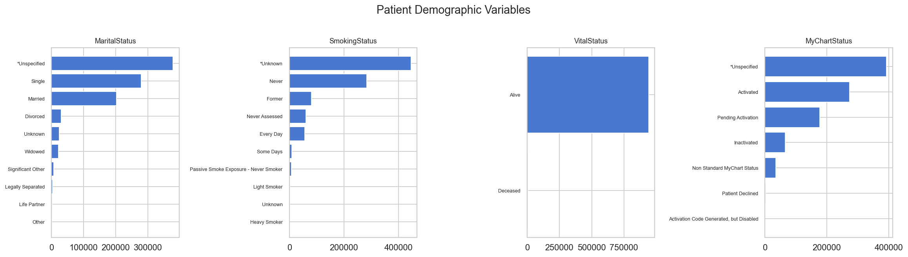

3. Utilization Patterns
Volume, Case Mix, And System Activity
The system appears busier over time, with heavy concentration in a handful of encounter types. Hospital-specific fields behave as expected and should not be read as global missingness problems.

Encounter Volume By Year
The system’s observed activity grows steadily from 2022 through 2025.

Encounter Type Distribution
Office, lab, and hospital encounters make up the bulk of activity.

Hospital Length Of Stay
Hospital stays are concentrated at short durations with a meaningful long tail.

Patient Demographics Snapshot
Race, smoking, vital status, and MyChart status are more usable than several other patient fields.